|
Seunghwan Um Hi there! I'm a PhD student at Robotics Innovatory, Sungkyunkwan University, South Korea, under the supervision of Prof. Hyouk Ryeol Choi Recently, my research interest has focused on developing robotic systems capable of interacting with unstructured environments during grasping or manipulation.
|
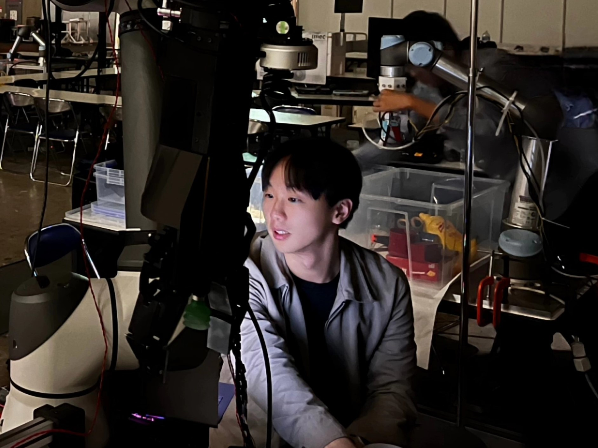 |
{kind=link}
Research |
|
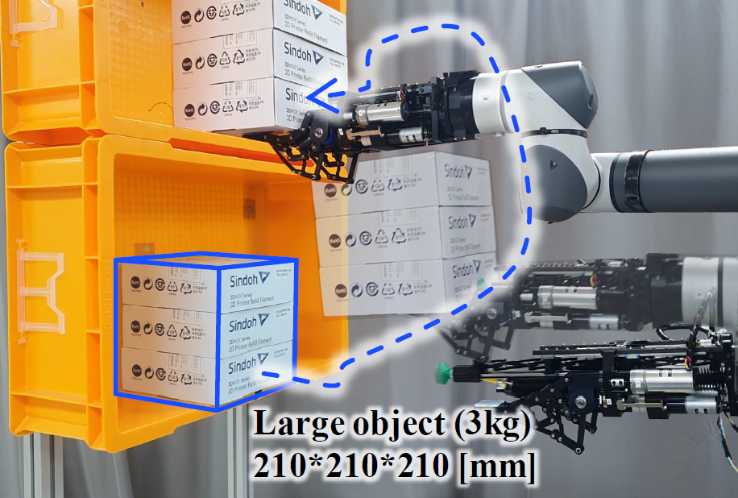
|
PALM-Gripper: Integrated Gripper with Parallel AdaptabLe Mechanism for Shelf Picking in Logistics
Seunghwan Um, Yeong Gwang Son, Juyong Hong, Chun Soo Kim, Issac Rhee, Heeyeon Jeong, Hyouk Ryeol Choi* IEEE Transactions on Mechatronics (T-mech), 2026, Recently accepted Paper "Parallelly adaptable palm mechanism" for complementing the suction gripper's compliance |

|
Toward Reliable Bin-Picking: Collision-Aware Robotic Design and Control Strategy for Heavily Cluttered Environment
Seunghwan Um, Yeong Gwang Son, Jaeyoon Shim, Hyouk Ryeol Choi* IEEE Robotics and Automation Practice (RA-P), 2026, Recently accepted Paper To address the limitations of single-modality grasping in complex environments, we present a robust network and compliance control validated for industrial applicability at the ICRA 2024 RGMC. |
|
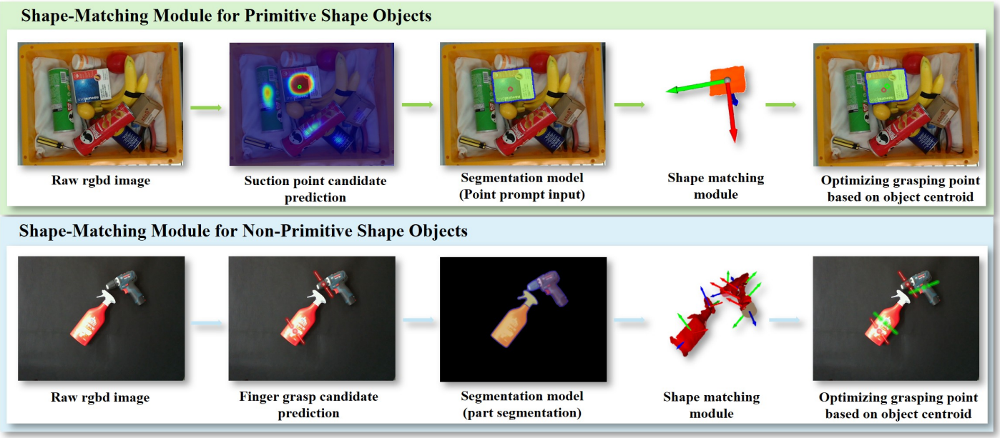
|
Plug-and-Play Shape Matching Module for Zero-Shot Mesh-Free Grasp Refinement on Unknown Objects
Juyong Hong, Yeong Gwang Son, Seunghwan Um, Hyouk Ryeol Choi* IEEE Robotics and Automation Letters (RA-L), Will be presented in ICRA 2026 Paper Training-free, plug-and-play module that enhances existing grasp planners for unknown objects. It reorganizes the grasp candidates based on an object's centroid from a single RGB-D image. |
|
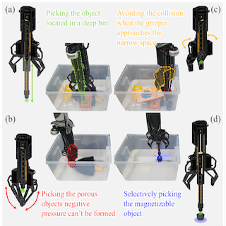
|
Overcoming Heavy Clutter: Utilizing the Hybrid Grasping Network and
Gripper
Seunghwan Um, Yeong Gwang Son, Tat Hieu Bui, Ho Sang Jung, Hyouk Ryeol Choi* IROS 2024 Workshop: Benchmarking via Competitions in Robotic Grasping and Manipulation ★Best Extended Abstract Workshop page / Youtube / Paper A robotic bin-picking system evaluated in the 9th Robotic Grasping and Manipulation Competition (RGMC) at ICRA 2024. |
|
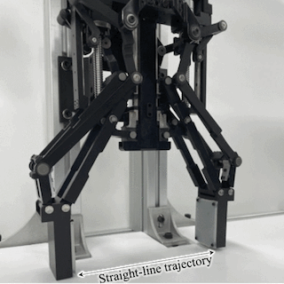
|
Development of Adaptive Gripper Enhancing Power Grasp Range and
Linearity
Issac Rhee, Chun Soo Kim, Heeyeon Jeong, Seung Jae Moon, Seunghwan Um, Yeong Gwang Son, Yong Bum Kim, Ho Sang Jung, Hyouk Ryeol Choi* IEEE Access, 2024 Paper Gripper design that applies a Grasshopper mechanism to improve fingertip movement. It also allows the fingertips to move towards the palm of the gripper after grasping an object, thereby expanding the range of object sizes that can be adaptively grasped. |
|
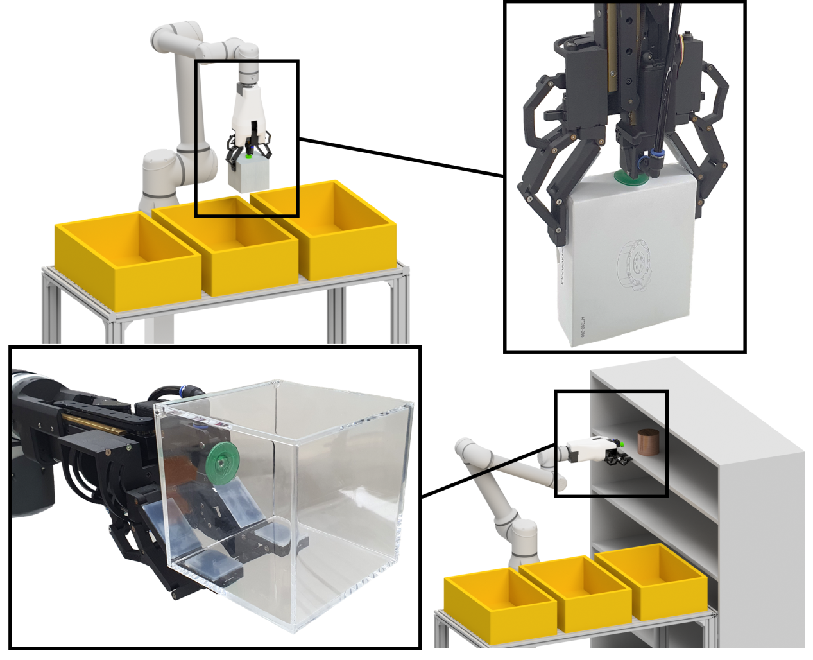
|
ReC-Gripper: A Reconfigurable Combined Suction and Fingered Gripper for
Various Logistics Picking and Stowing Tasks
Seunghwan Um, Heeyeon Jeong, Chun Soo Kim, Issac Rhee, Hyouk Ryeol Choi* IEEE Robotics and Automation Letters (RA-L), Presented in ICRA 2024 Paper Reconfigurable gripper to handle the objects in the bin and shelf environment simultaneously. I validated the gripper's performance in experiment at shelf, and competition like bin environment. |
Award |
|
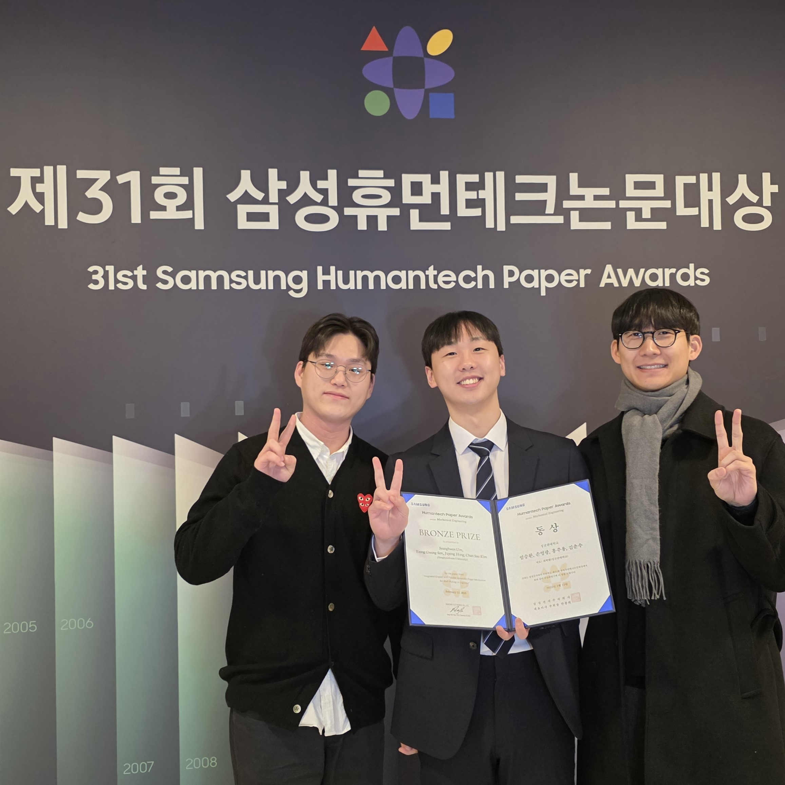
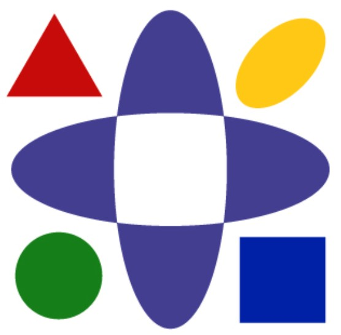
|
ü•â Bronze Prize
of Samsung Humantech
Seunghwan Um, Yeong Gwang Son, Juyong Hong, Chun Soo Kim, Hyouk Ryeol Choi* Samsung Electronics Co., Ltd., 2025 News / Humantech site
|
|
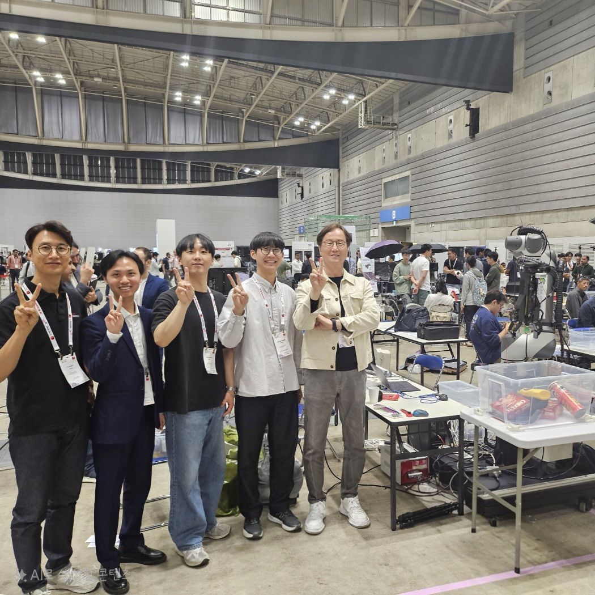
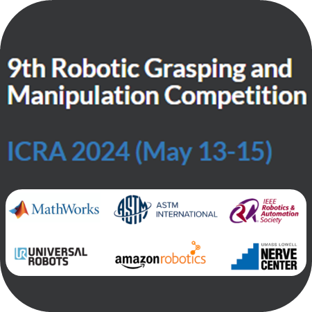
|
ü•à 2nd Place
in the Competition
Yeong Gwang Son, Seunghwan Um, Juyong Hong, Chun Soo Kim, Hyouk Ryeol Choi* 9th Robotic Grasping and Manipulation Competition (RGMC) at ICRA, 2024 News / Competition page We participated 9th Robotic Grasping and Manipulation Competition (RGMC) at ICRA 2024 with ReC-Gripper and Extended CoAS-Net. |
|
|
üèÜ Best Prize
in the Contest
3D Design for the Future, Ministry of Trade, Industry and Energy (MOTIE), 2023 ü•â Bronze Prize Bronze Prize in the Competition The Korean Society of Mechanical Engineers (KSME), 2021 üèµÔ∏è Encouragement Prize in the Contest Creative and Intelligent Robot Contest (CIRO), 2021 [1st Team], Seunghwan Um, Hyungjin Park, Jaehyeon Nam, Boseok Kim, Yohan Ahn, Minsu Kong, Changho Lee, hyunju Kwak, Joonmyung Choi* [2nd Team] Boseok Hong, Youngsu Jeong, Euichan Kim Team leader of Wall Climbing Car (WCC) [Undergraduate Project] |
Personal Project |

|
Impedance Control with M0609
Seunghwan Um, Taehyen Bae Code (TBD) / Page
|
|
|
Admittance Control with RB10
Seunghwan Um, Jaeyoon Shim Code (TBD) / Page
|
|
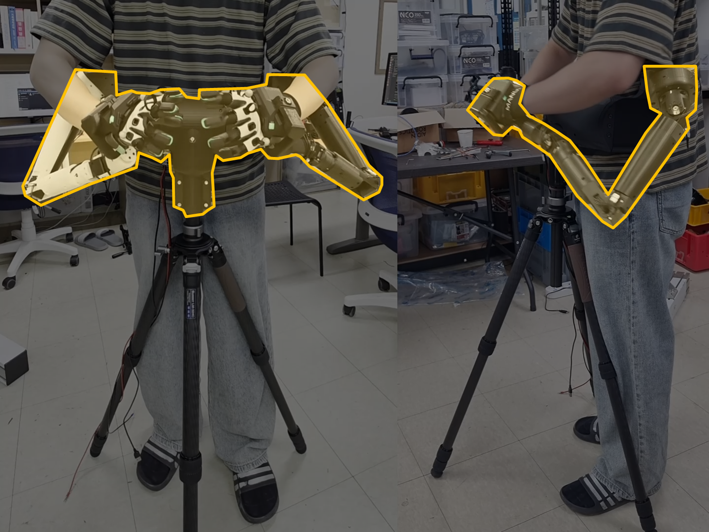
|
Teleoperating leader arm for Dual Arm
Seunghwan Um, Jeong Hwan Park, Che Min Ahn
|
|
Template Jon Barron's website. |